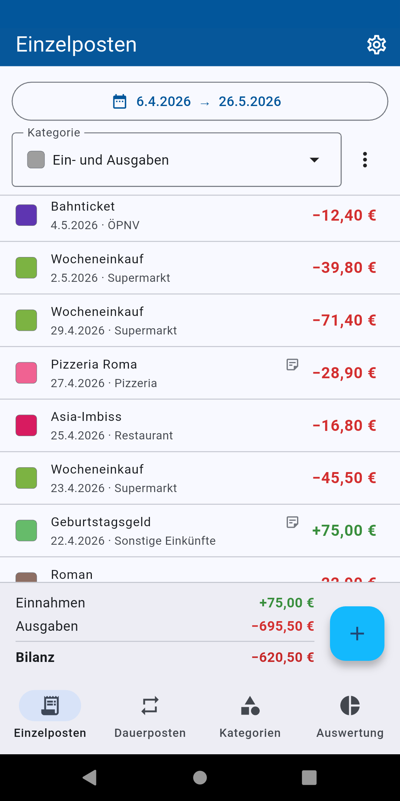
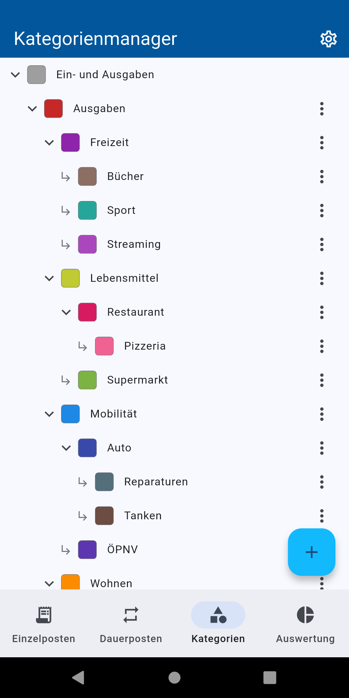
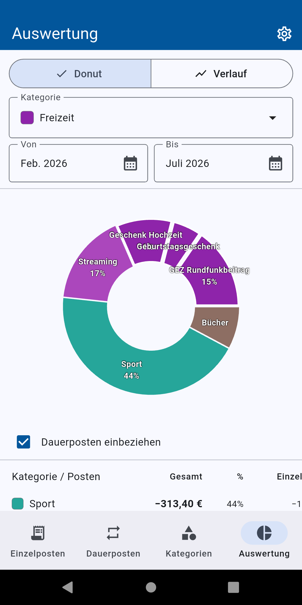
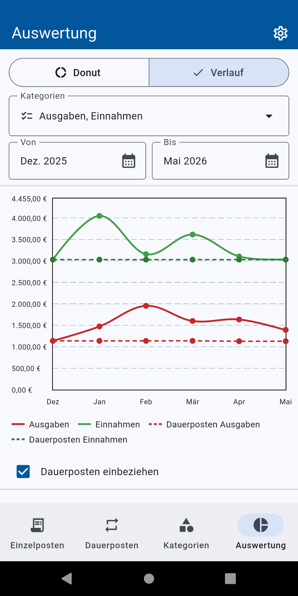
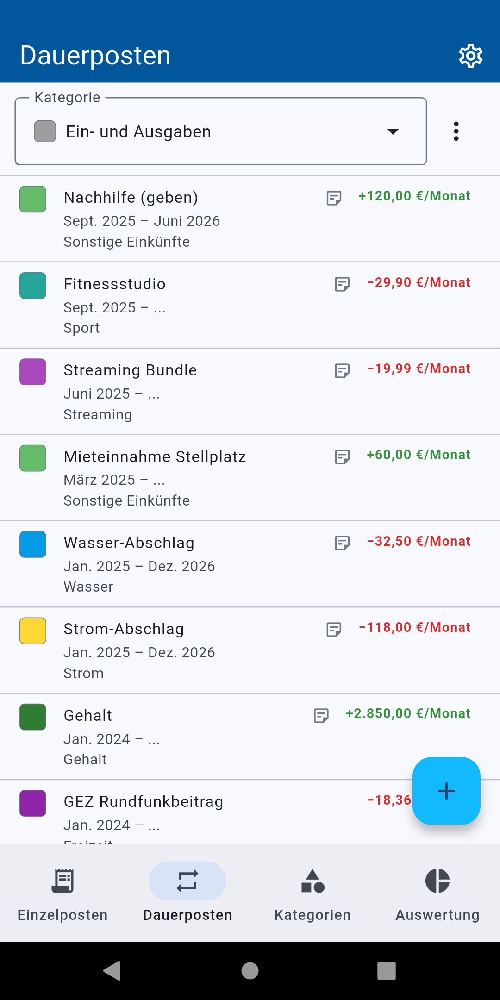
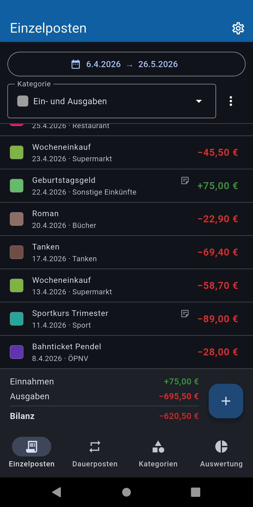

Potte — Haushaltsbuch für Android
Komplett offline. Tief verschachtelbare Kategorien. Kein Konto, kein Tracking.
- GehaltEinnahmen · Gehalt +2.450,00 €
- Miete JuliAusgaben · Wohnen · Miete −980,00 €
- WocheneinkaufAusgaben · Lebensmittel −87,43 €
Kostenlos · ohne Werbung · aktuelle Version 1.5.2
Deine Daten bleiben auf deinem Gerät
Potte funktioniert zu 100 % offline. Es gibt kein Konto, keine Anmeldung, keine Cloud und kein Tracking. Alle Posten, Kategorien und Belegfotos liegen in einer lokalen Datenbank auf deinem Handy — kein Code in der App sendet Daten an irgendeinen Server. Die App fordert nicht einmal die Internet-Berechtigung an.
Kategorien ohne Tiefenlimit
Die meisten Haushaltsbücher erlauben höchstens zwei Kategorie-Ebenen. In Potte verschachtelst du so tief, wie es für dich Sinn ergibt — und wertest auf jeder Ebene aus:
- Ausgaben
- Wohnen
- Nebenkosten
- Strom
- Grundgebühr
- Strom
- Nebenkosten
- Lebensmittel
- Mobilität
- Wohnen
Gemeinschaftsausgaben mit „Pots“
Für WG, Urlaub oder Geschenkkasse: Lege einen Pot an, trage Mitglieder ein und erfasse, wer was bezahlt hat — auch mit mehreren Bezahlern pro Ausgabe und individuellen Anteilen („wer profitiert wie viel“).
- Automatische Endabrechnung mit der minimalen Anzahl an Überweisungen
- Ausgleichszahlungen: Überweisungen als bezahlt markieren, auch Teilzahlungen — die Abrechnung zeigt nur noch offene Beträge
- Export als PDF und CSV, zum Teilen mit allen Beteiligten
- In deinen persönlichen Auswertungen zählt automatisch nur dein eigener Anteil
Screenshots






Alle Funktionen im Überblick
- Einzelposten mit Datum, Kategorie, Notiz und Belegfoto
- Dauerposten für monatlich Wiederkehrendes (Miete, Gehalt, Abos)
- Auswertungen: Donut-Diagramm, Liniendiagramm, Prozent-Tabelle
- Bilanz-Verlauf über beliebige Zeiträume
- Gemeinschaftsausgaben („Pots“): Ausgaben auf mehrere Personen aufteilen — mit mehreren Bezahlern, individuellen Anteilen, automatischer Endabrechnung und Ausgleichszahlungen
- PDF- und CSV-Export der Pot-Abrechnung
- Schnellauswahl-Vorlagen für häufige Posten am Plus-Button
- Autovervollständigung für Bezeichnungen
- Belegfotos direkt am Posten
- CSV-Import und -Export
- Komplett-Backup (Datenbank + Fotos) mit Wiederherstellung und automatischen Sicherheitskopien
- Deutsches Zahlenformat (1.234,56 €), gemacht für den DACH-Raum
Was Potte absichtlich nicht tut
- Kein Tracking, keine Analyse-Dienste, kein Crash-Reporting
- Keine Anmeldung, kein Konto
- Keine Cloud-Synchronisation
- Kein Internetzugriff — die Berechtigung wird gar nicht erst angefordert
Die App nutzt ausschließlich Open-Source-Bibliotheken, die du in der App einsehen kannst. Details stehen in der Datenschutzerklärung.
Probier Potte aus
Kostenlos bei Google Play — ohne Werbung, ohne Haken.